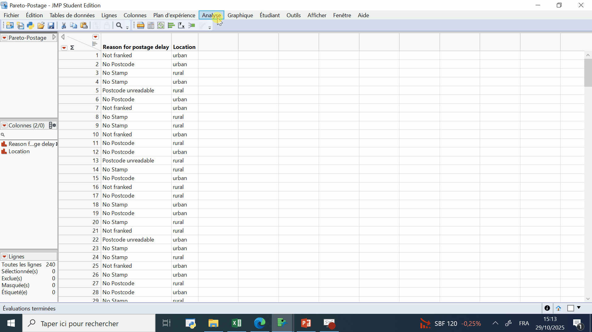

Procédure 16 · Graphiques
Pareto par catégorie
Procédure pas à pas
- Ouvrir Analyse → Qualité et procédés → Diagramme de Pareto.
- Placer Raison des retards dans Y.
- Placer Location dans X afin de distinguer les catégories.
- Valider puis comparer les Pareto ruraux et urbains.
Jeu de données / résultat
Fichier cité : Pareto-Postage.xls
Démonstrations animées dans JMP
Animations extraites du PowerPoint « Lean Six Sigma avec JMP 003 ». Elles complètent les étapes numérotées ci-dessus.
